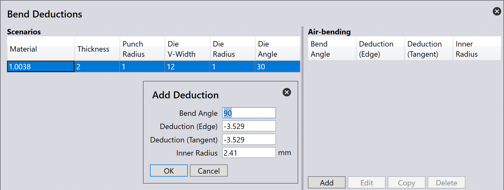

Bend Deductions
Bend deductions는 판금 파트의 전개 길이[1]를 계산하는 데 사용됩니다. 벤딩 후 정확한 치수로 파트를 정확하게 생산하는 데 필요합니다.
Bend deductions는 벤딩 프로세스 중에 발생하는 재료 신축 및 압축을 고려합니다. Bend deductions를 사용하면 TecZone Bend이 평면 패턴 길이를 조정하여 최종 벤딩된 파트가 지정된 치수를 충족하도록 할 수 있습니다.
Bend deductions는 재료 유형, 두께, bend 반경 및 벤딩 방법과 같은 요소에 따라 달라질 수 있습니다.
3D 파트를 TecZone Bend으로 가져오면 소프트웨어가 파트의 형상 및 재료 속성을 기반으로 bend deductions를 자동으로 계산합니다. 필요한 경우 평면 패턴 길이를 미세 조정하기 위해 bend deductions를 수동으로 조정할 수도 있습니다.
Bend deduction 설정
사용자 정의 bend deductions는 Bend Deductions 데이터베이스에서 설정할 수 있습니다. 액세스하려면 database 아이콘을 클릭하고 Bend Deductions 를 선택하세요.

새로운 bend deduction 시나리오를 추가 하거나 기존 시나리오를 선택하여 편집 또는 삭제 할 수 있습니다. 기존 시나리오를 복사 하여 유사한 설정으로 새 시나리오를 생성할 수도 있습니다.

추가 를 클릭하여 새 bend deduction 시나리오를 생성합니다. 다음 매개변수를 선택하고 입력하세요:
-
Material: bend deductions가 적용되는 재료를 선택합니다.
-
Thickness: bend deductions가 적용되는 시트의 두께를 설정합니다.
-
Punch radius: bend deductions가 적용되는 상부 툴 반경을 설정합니다.
-
V-width type: 사용되는 V-width 측정 유형을 선택합니다.
-
Die V-width: bend deductions가 적용되는 하부 툴 너비를 설정합니다.
-
Die radius: bend deductions가 적용되는 하부 툴 반경을 설정합니다.
-
Die angle: bend deductions가 적용되는 하부 툴 각도를 설정합니다.
OK 를 클릭하여 새 시나리오를 저장합니다.
또한 bend deduction 시나리오를 선택하고 … 옵션을 클릭하면 추가 옵션을 볼 수 있습니다:

-
Graph: bend 각도와 bend deduction 간의 관계를 보여주는 그래프를 표시합니다. 이 시각적 표현은 서로 다른 bend 각도에 따라 bend deductions가 어떻게 변하는지 이해하는 데 도움이 됩니다. 그래프의 파란색과 빨간색 선 위로 커서를 이동하여 특정 값을 확인하세요.

-
Import: 외부 CSV 파일에서 bend deduction 데이터를 가져올 수 있습니다.
-
Export: 백업 또는 공유 목적으로 현재 bend deduction 데이터를 CSV 파일로 내보낼 수 있습니다.
-
3rd party: 타사 소프트웨어 또는 소스에서 bend deduction 데이터를 가져오는 옵션을 제공합니다.
Bend deduction 유형
TecZone Bend은 세 가지 유형의 bend deductions를 지원합니다: Air Bending, Folding 및 Coining.
각 유형에는 사용된 벤딩 방법에 따라 bend deductions를 정확하게 결정하기 위한 고유한 매개변수 및 계산 집합이 있습니다.
Air Bending
Air bending은 다이를 완전히 닫지 않고 펀치와 다이를 사용하여 판금을 벤딩하는 일반적인 벤딩 방법입니다. 이 방법은 더 많은 유연성을 허용하며 다양한 재료 및 두께에 적합합니다.
Air bending의 bend deductions를 추가하려면 Bend Deductions 데이터베이스에서 적합한 시나리오를 선택하세요. 추가 를 클릭하여 새 air bending deduction 시나리오를 생성하고 Bend Angle 을 입력하세요.

bend 각도를 입력하면 해당하는 Deduction (Edge), ui:962[Deduction (Tangent)] 및 Inner Radius 값이 계산되어 표시됩니다.
OK 를 클릭하여 새 air bending deduction을 저장합니다.
Folding
Folding 또는 Hemming은 펀치와 다이가 완전히 닫혀 날카로운 벤드를 생성하는 벤딩 방법입니다. 이 방법은 주로 얇은 재료에 사용되며 bend deductions의 정밀한 제어가 필요합니다.

Folding의 bend deductions를 추가하려면 Bend Deductions 데이터베이스에서 적합한 시나리오를 선택하세요. 추가 를 클릭하여 새 folding deduction 시나리오를 생성하고 Hemming method 를 선택하세요.
*OK*를 클릭하여 새 folding deduction을 저장합니다.
Coining
Coining은 판금을 펀치와 다이 사이에 높은 압력으로 눌러 정밀하고 날카로운 벤드를 만드는 벤딩 방법입니다. 이 방법은 일반적으로 두꺼운 재료에 사용되며 정확한 bend deductions가 필요합니다.

Coining의 bend deductions를 추가하려면 Bend Deductions 데이터베이스에서 적합한 시나리오를 선택하세요. 추가 를 클릭하여 새 coining deduction 시나리오를 생성하세요.
OK 를 클릭하여 새 coining deduction을 저장합니다.